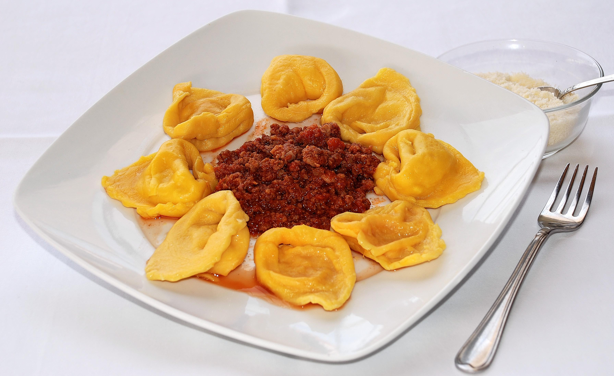
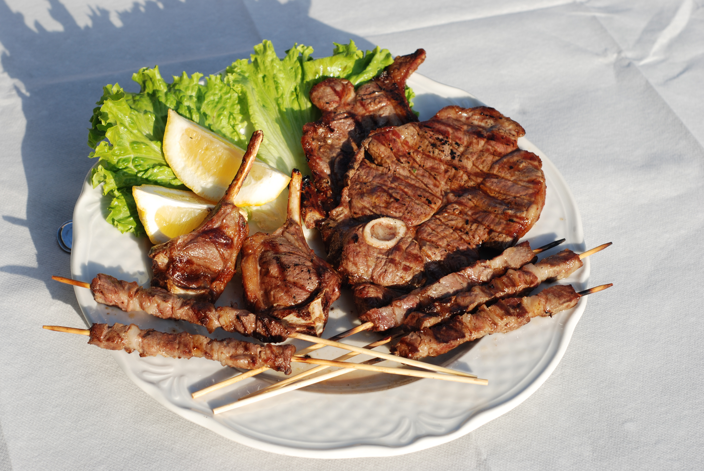
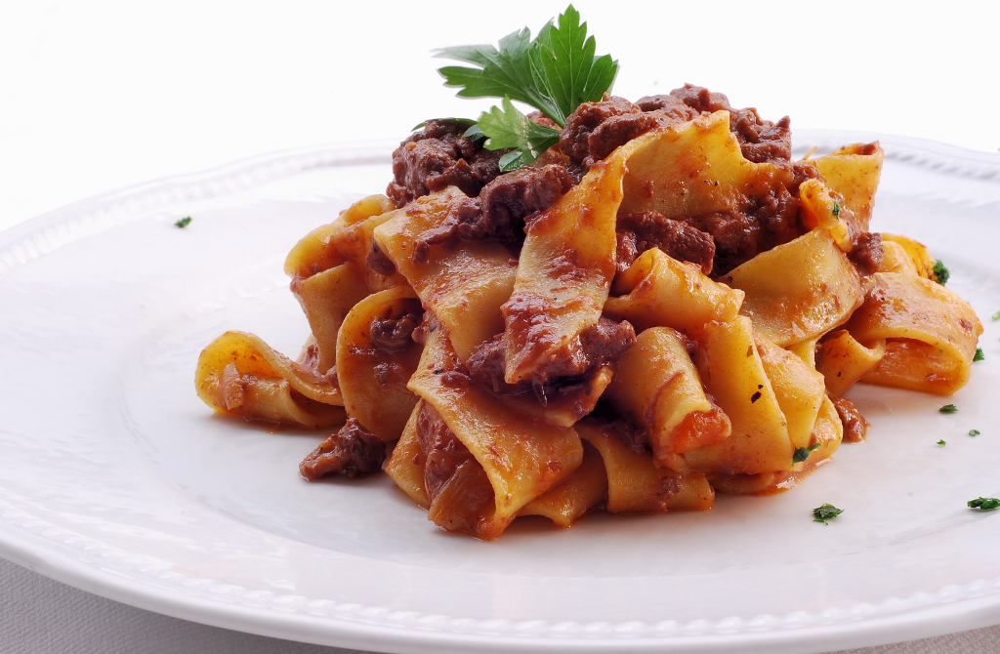
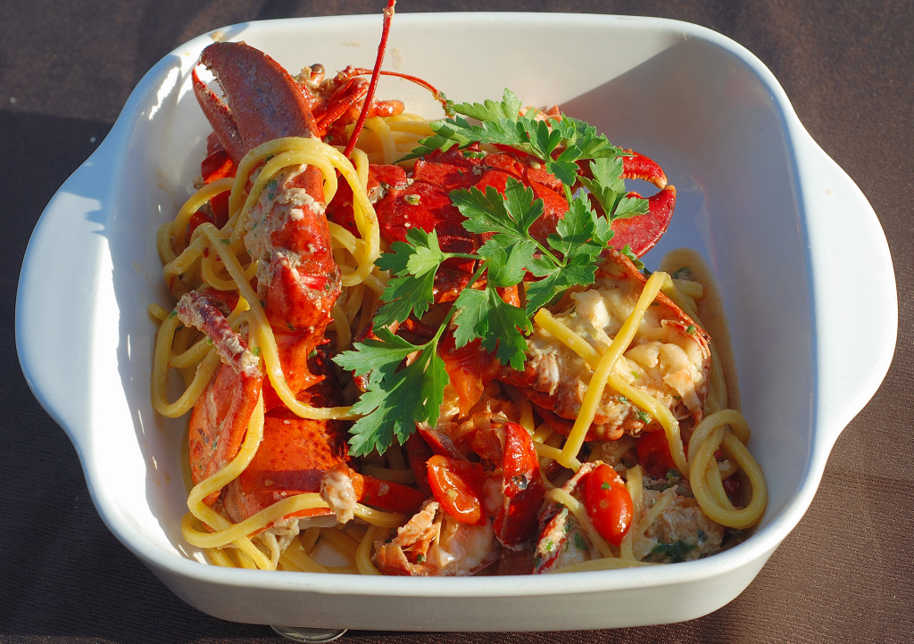
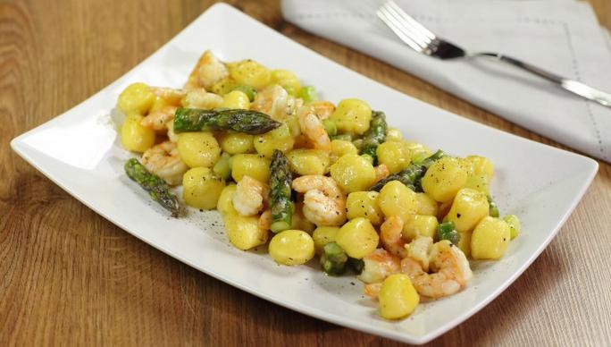
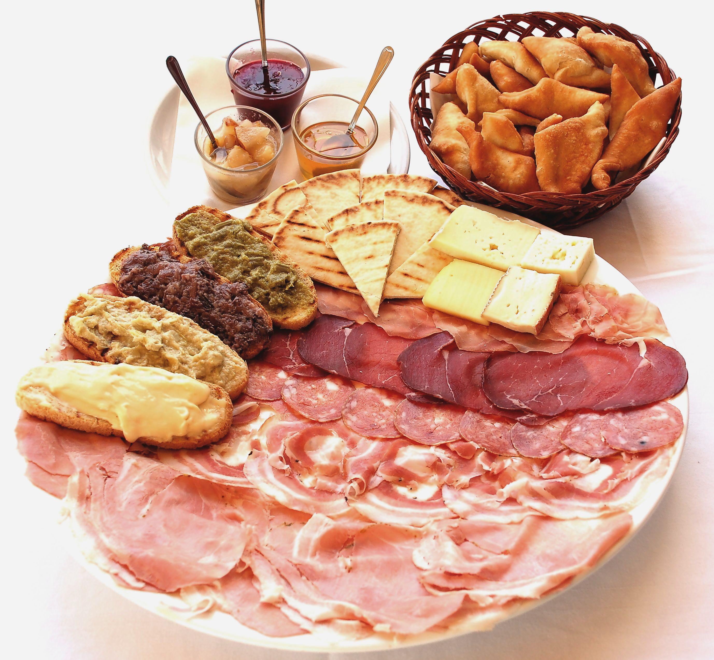
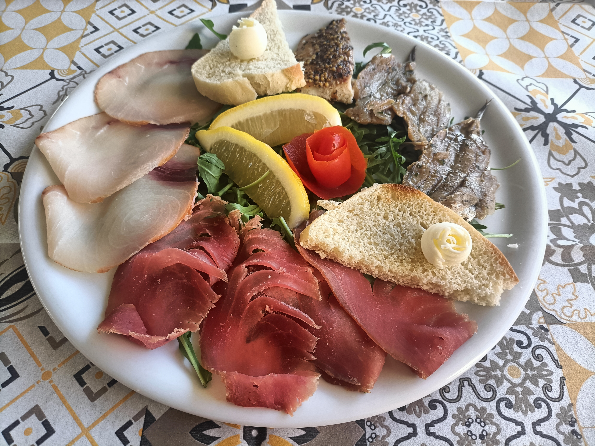
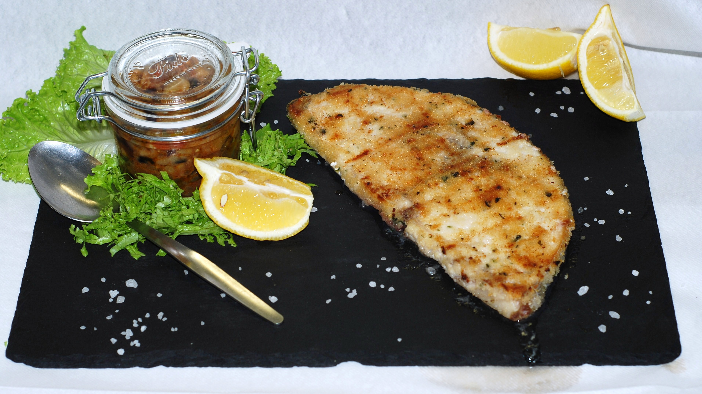
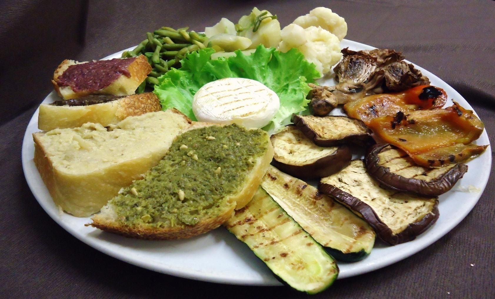

La nostra galleria
Esplora la nostra galleria fotografica per scoprire i nostri piatti.










Un viaggio tra sapori, storia e tradizione
Esplora la nostra galleria fotografica per scoprire i nostri piatti.








